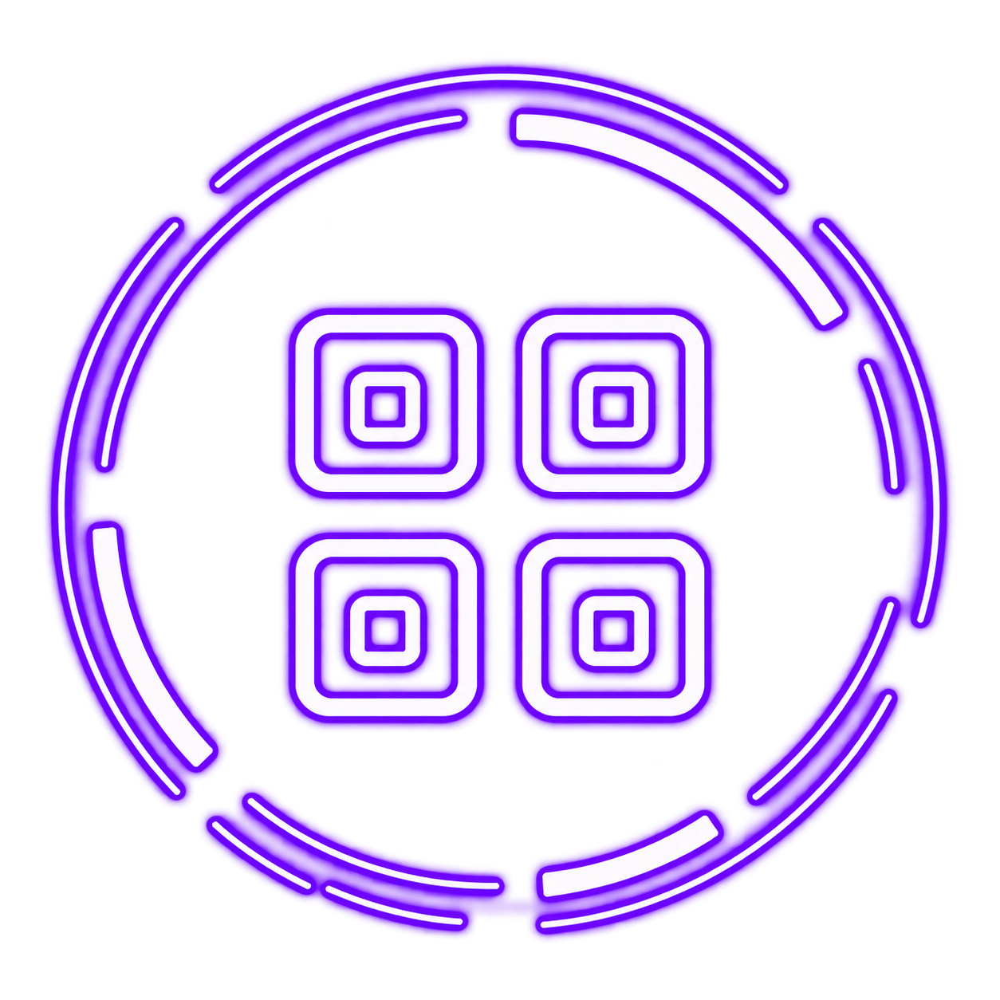
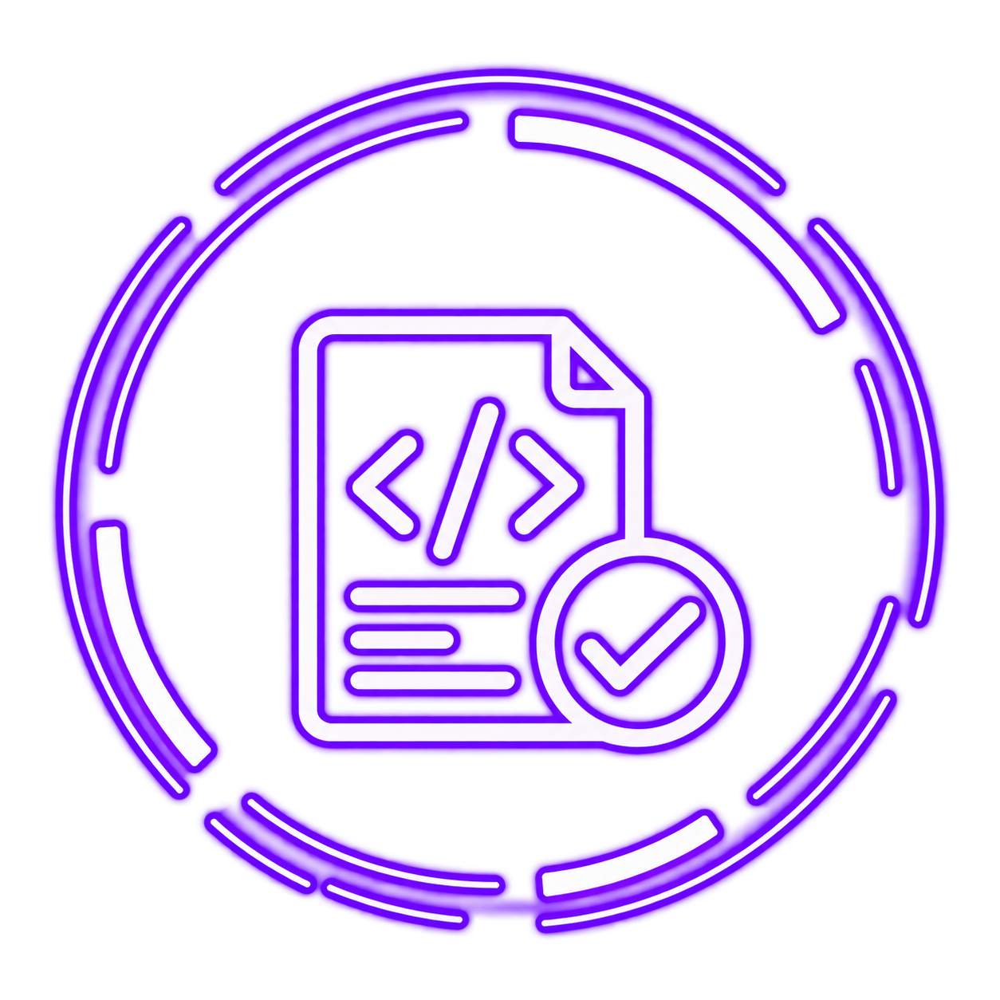
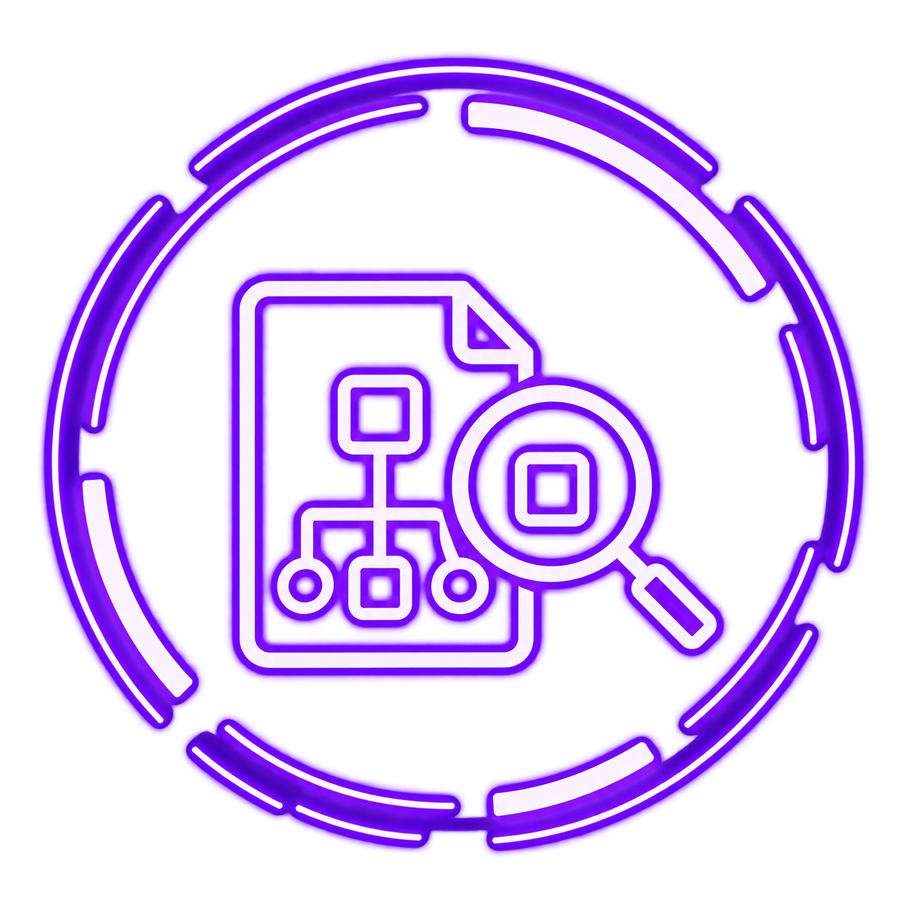
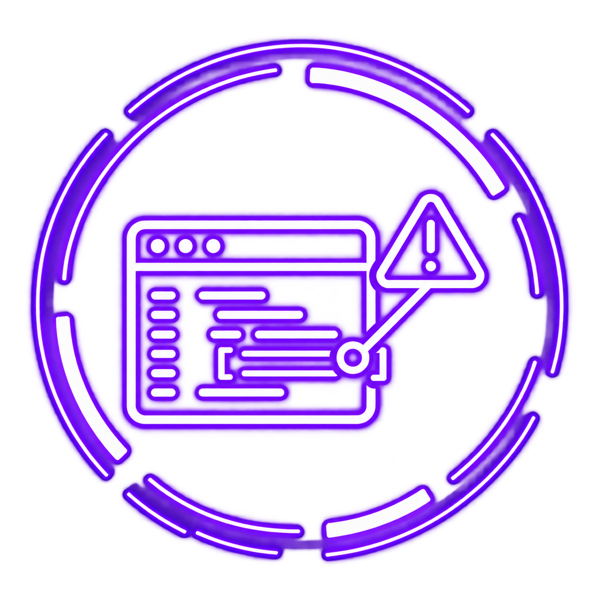
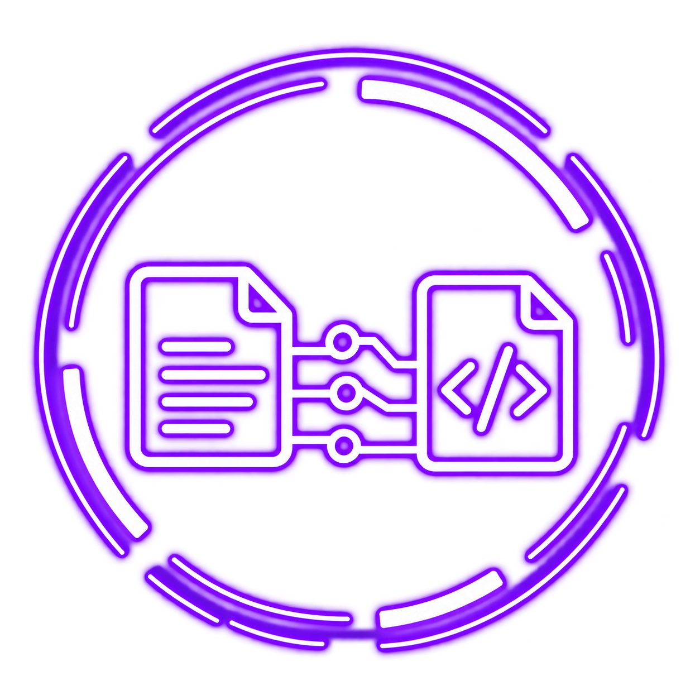
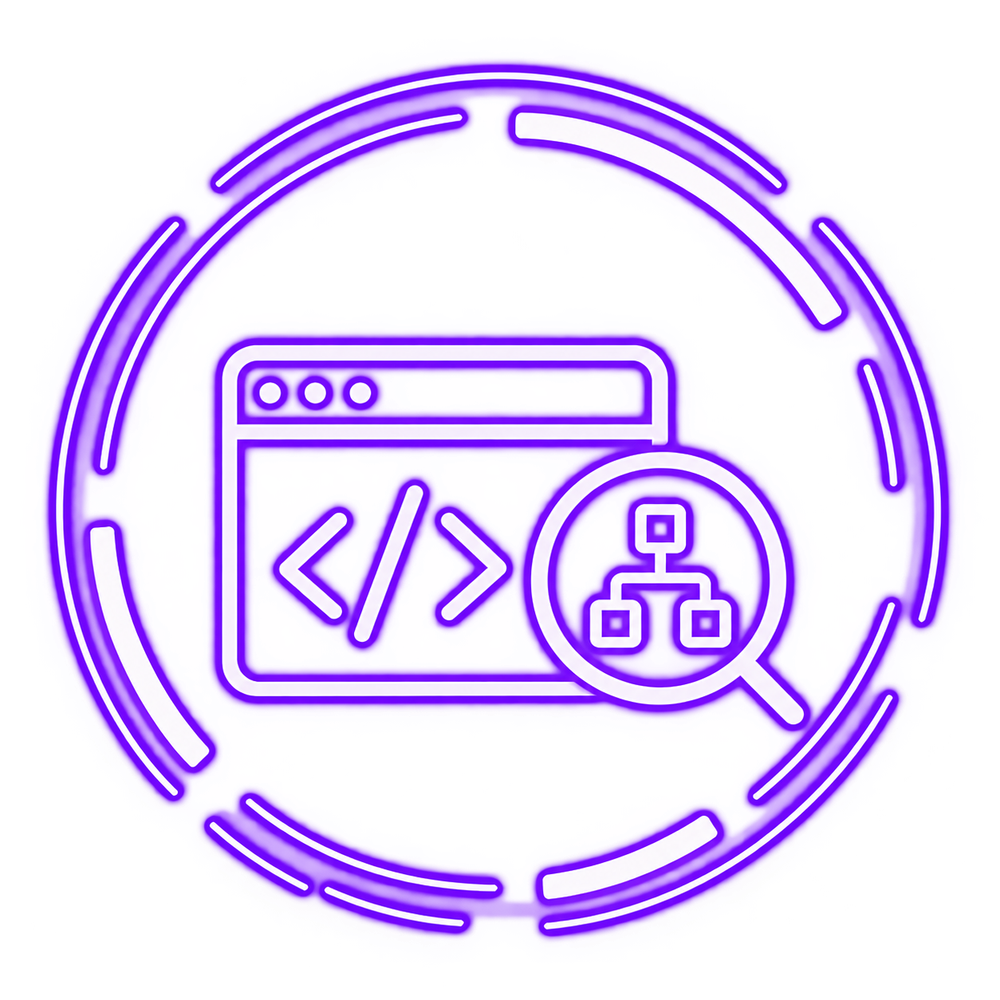
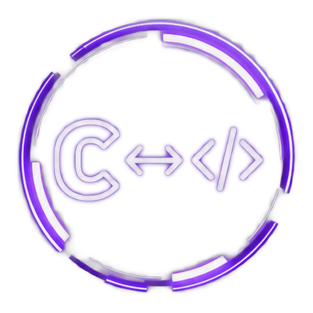

Familiar game code
VOID gives everyday game systems a familiar shape: classes, interfaces, generics, delegates, and events behave as normal language features instead of framework-specific patterns.
VOID Language
An independently designed game-development language with its own compiler, runtime, GC, standard library, native C output, and a compiler-side language server powered by the same semantic model as normal builds.
The language today
VOID is designed to feel familiar in ordinary game code while remaining independent underneath. Its object model, value semantics, cleanup, threading, GC, native boundary, and tooling are built as parts of one language instead of separate add-ons.
VOID gives everyday game systems a familiar shape: classes, interfaces, generics, delegates, and events behave as normal language features instead of framework-specific patterns.
Structs keep value semantics even when they are nested, readonly, stored in multidimensional arrays, captured by closures, or carried through iterator state.
Exceptions, finally, using, and iterator disposal share one cleanup model, so leaving a scope does not create a second set of lifetime rules.
Managed workers participate in GC coordination, while waits, timeouts, cancellation, and atomics build on the same synchronization foundation used by the rest of VOID.
VOID lowers to portable C, then uses the system compiler and linker to produce native programs and libraries. Debug builds preserve original VOID filenames and source lines.
The same compiler model powers builds and editor intelligence, so checking, diagnostics, completion, navigation, and symbol lookup do not drift into a second language implementation.
Current direction
With timed waits and cooperative cancellation complete, the runtime now has the synchronization pieces a scheduler can depend on. The active block builds a managed ThreadPool and Task completion model on that existing machinery, keeping async work inside the ordinary VOID runtime. Full async/await lowering comes after that foundation.
See the complete language/runtime surface, nullability, initialization, metadata, GC, unsafe code, and native integration.
02Object ModelConstructor chaining, interface inheritance, struct interfaces, virtual properties, events, delegates, and conditional expressions.
03Value Types & Control FlowNested/readonly structs, jagged and rectangular arrays, closure capture, iterator completion, compound targets, and GC-aware value layouts.
04ExceptionsThrow, handlers, propagation, GC-safe unwinding, finally, rethrow, iterator/delegate integration, native boundaries, and worker exception delivery through Join().
Managed workers, coordinated GC, recursive monitors, lock, timed waiting, reset events, semaphores, cooperative cancellation, Interlocked atomics, Volatile memory ordering, and worker exception handoff.
Deterministic disposal, using, generic inference, extension methods, static interface contracts, constrained calls, and default interface methods.
07Patterns & Switch ExpressionsDeclaration, relational, logical, property and recursive patterns, guarded switch cases, and expression-form switch.
08Operators & Generic MathUser-defined unary/binary operators, static-interface operator contracts, constrained generic dispatch, and iterator-safe generic provenance.
09ConversionsUnified standard and user-defined conversions, nullable lifting, target-typed sites, static-interface conversion contracts, and constrained generic dispatch.
10Getting StartedSee the current project flow, source-only checking, native builds, and debug workflow.
11LibrariesStandard-library collections plus reusable VOID library projects, exported native entry points, archive output, and normal consumer linking.
12CompilerFrom parsing and semantics through C lowering, native binaries, checking, and debug mapping.
13DiagnosticsPrecise end-exclusive ranges shared across lexer, parser, semantic analysis, and checking.
14Toolingvoidc check, live diagnostics, hover/signatures, completion, navigation, references, symbols, source mapping, and multi-file editor state.
Pointers, ABI-safe structs, by-reference callbacks, memory primitives, stack allocation, local native dependencies, and library exports.
16ExamplesBrowse the working language, initialization, native, diagnostics, and tooling examples.
Built with a purpose
The language server does not reimplement VOID. Builds, source-only checks, and editor features all read from the same semantic model, so a thin editor client can stay accurate as the language grows.

Nullable values, named arguments, target-typed defaults, initializers, static state, and deterministic type initialization compose normally.

voidc check runs the real front end without generating C, invoking a native compiler, or creating build outputs.

Tools can ask the compiler for symbols, types, definitions, members, and callable parameter metadata from one analyzed session.

Tokens, syntax, and compiler errors retain end-exclusive start/end source ranges.

Generated C emits standard line mappings so native debug information points back to original VOID files and lines.

Live diagnostics, hover, signatures, semantic completion, definitions, references, document/workspace symbols, and synchronized unsaved project state.

VOID lowers to C and links project-local native dependencies through its explicit unsafe ABI boundary.